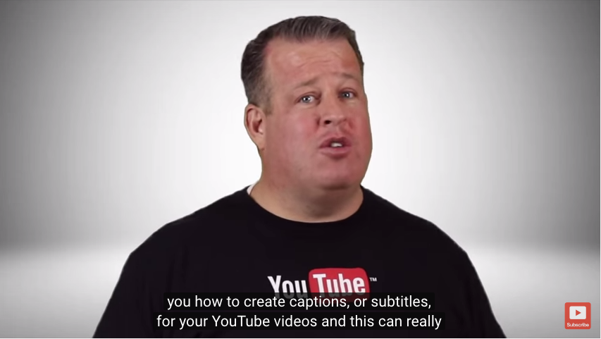

# How to Be an A11y
Aisha Blake | @AishaBlake
## My name is Aisha

- Front-end web developer
- Dog enthusiast
### I Teach People


## What We're Doing Here
- Defining stuff
- Asking questions
- Talkin' about tools
Web accessibility is the process of making it easy for everyone to access your web content, regardless of how they approach the web.
### Business Case
- Approximately 1/5 of people on the web have some form of disability.
- Mo' users, mo' money.
- Stop fighting the spec.
### Moral Case
- It makes life better for everyone!
- The golden rule, yo.
Semantic Markup
Does your markup reflect the hierarchical structure of the page?
Color Contrast
Is your content readable?
Alt Text
Do your images have alt attributes?
alt="laughing woman doing yoga"
Descriptive Content
Or: No "Click Here!" Buttons
Do your headings and links accurately communicate the content they're associated with?
## Considering Other Challenges
Padding Around Clickables
Keyboard Navigation
Can a user navigate through all of your content using only a keyboard?
Focus
Does focus shift to your dynamic elements appropriately?
Captions
Are there captions available for all of your video content? Are there transcripts for audio?

### Color Safe
[](http://colorsafe.co/)
### WebAIM Color Contrast Checker
[](http://webaim.org/resources/contrastchecker/)
### Chrome Accessibility Dev Tools
[](https://chrome.google.com/webstore/detail/accessibility-developer-t/fpkknkljclfencbdbgkenhalefipecmb?hl=en)
### A11y npm module
[](https://www.npmjs.com/package/a11y)
### tenon.io
[](https://tenon.io/index.php)
Homework
Find one thing you can do from now on to make all of your work more accessible.
## Resources
- WebAIM: http://webaim.org/
- WebAxe: http://www.webaxe.org/
- Heydonworks: http://www.heydonworks.com/
- Marcy Sutton: https://twitter.com/marcysutton
- Alice Boxhall: https://twitter.com/sundress
## Thank You!
@AishaBlake | aishablake.com